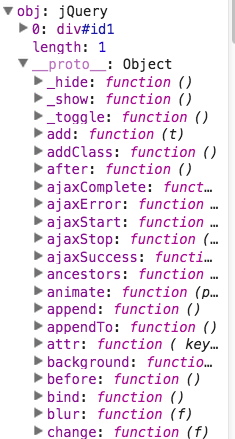

Download UnderTheHood.zip and unzip to get all jQuery versions plus experiments.
JavaScript is a prototype-based scripting language with dynamic typing and first-class functions. This mix of features makes it a multi-paradigm language, supporting object-oriented, imperative, and functional programming styles.
jQuery is a fast, small, and feature-rich JavaScript library. It makes things like HTML document traversal and manipulation, event handling, animation, and Ajax much simpler with an easy-to-use API that works across a multitude of browsers.
There have been 96 releases of jQuery. Will focus on jQuery1.0.js
Let's quickly look at snippets of jQuery to review some features of JavaScript
All references to jQuery in what follows will be to jQuery1.0.js
Line 949:
jQuery.macros = {
to: {
appendTo: "append",
prependTo: "prepend",
insertBefore: "before",
insertAfter: "after"
},
css: "width,height,top,left,position,float,overflow,color,background".split(","),
filter: [ "eq", "lt", "gt", "contains" ],
...
}
No function overloading. Need to check argument types of functions at runtime.
Line 17: if ( a && a.constructor == Function && jQuery.fn.ready ) return jQuery(document).ready(a);Ways to determine current type of a variable
A variable can change types during execution
Line 696:
var f = jQuery.expr[m[1]];
if ( f.constructor != String )
f = jQuery.expr[m[1]][m[2]]; // Note: f is now a String
Line 659:
var g = not !== false ? jQuery.grep :
function(a,f) {return jQuery.grep(a,f,true);};
<html>
<head>
<script type='text/javascript'>
//jQuery in a nutshell
function jQuery(a, c) {
if (this === window) {
return new jQuery(a,c);
}
this.length = 0;
[ ].push.apply(this, [a]);
return this;
}
jQuery.fn = jQuery.prototype = { // JavaScript is a prototypal language.
// Any object constructed using jQuery will have function1 in its prototype.
function1: function() {alert("In prototype function1: " + this[0]);}
}
jQuery.function1 = function() {alert("In static function1" + this);}
$ = jQuery;
// end jQuery
function demo() {
$("#id").function1();
$.function1();
}
</script>
</head>
<body onload="demo()">
</body>When a function "remembers" the environment that it was defined in
<html>
<script type='text/javascript'>
function init(header) {
this["f1"] = function() {debugger; alert(header + " in f1")} // header will be "MUM" when function is called
this["f2"] = function() {debugger; alert(header + " in f2")}
}
</script>
</head>
<body onload="init('MUM')">
<button onclick="f1()">Call f1</button><br/>
<button onclick="f2()">Call f2</button>
To see what the closure of a function is, put a breakpoint in the function and look at the Scope panel in Developer Tools.
Line 277 jQuery.each( jQuery.macros.axis, function(i,n){ // value of n iterates through values of jQuery.macros.axis jQuery.fn[ i ] = function(a) { // add function named i to prototype of jQuery var ret = jQuery.map(this,n); // n is still defined when this function gets called because of closure. if ( a && a.constructor == String ) ret = jQuery.filter(a,ret).r; return this.pushStack( ret, arguments ); }; }); where jQuery.macros.axis is axis: { parent: "a.parentNode", ancestors: jQuery.parents, parents: jQuery.parents, next: "jQuery.sibling(a).next", prev: "jQuery.sibling(a).prev", siblings: jQuery.sibling, children: "a.childNodes" }
Learned module pattern in CS472
jQuery1.0 does a variant of this. The object you get back from $("...") contains the functions you can call on that object. A module also returns an object that contains functions that can be called. In both cases the functions are not defined globally.
<html>
<head>
<script src = "jQueryVersions/jquery-1.0.js"></script>
<script type='text/javascript'>
function init(header) {
var obj = $("#id1");
debugger;
}
</script>
</head>
<body onload="init()">
<div id="id1"></div>
</body>
|
 |
jQuery introduces only three
Use debugger to verify that the above is true
<html>
<head>
<script type='text/javascript'>
function foo(n1, n2) {
alert(this.test);
}
function useObject() {
obj = {test:"Using object"};
obj.foo = foo;
obj.foo(1, 2);
}
function useApply() {
foo.apply({test:"Using apply"}, [1, 2]);
}
function useCall() {
foo.apply({test:"Using call"}, [1, 2]);
}
function useBind() {
var foobind = foo.bind({test:"Using bind"}, 1, 2);
foobind();
}
function useGlobal() {
window.test = "Using global";
foo(1, 2);
}
</script>
</head>
<body onload="init()">
<button onclick="useObject()">Use object</button><br/>
<button onclick="useApply()">Use apply</button></br>
<button onclick="useCall()">Use call</button></br>
<button onclick="useBind()">Use bind</button></br>
<button onclick="useGlobal()">Use global object</button>
</body>
if ("" == 0) {
alert("huh?");
}
if ("" === 0) {
} else {
alert("That's better")
}
Equality and JavaScript
=== is only used twice in jQuery 1.0
Was this done to save a keystroke? Douglas Crockford recommends always using ===
Functions return this to simplify next call to a prototype function
<html>
<head>
<script type='text/javascript'>
function doMath() {
var f = new Foo(10);
f.add(10)
.multiply(2)
.display();
}
function Foo(value) {
this.value = value;
}
Foo.prototype.add = function(n) {
this.value += n;
return this;
}
Foo.prototype.multiply = function(n) {
this.value *= n;
return this;
}
Foo.prototype.display = function() {
alert(this.value);
return this;
}
</script>
</head>
<body onload="init()">
<button onclick="doMath()">Do math</button>
</body>
Function name can only be used once. If used again it will replace previous value of function. See Ways to determine current type of a variable. Note that using the value of the constructor property is not mentioned. This is what is used in jQuery 1.0, e.g.,
Line 17:
if ( a && a.constructor == Function && jQuery.fn.ready )
return jQuery(document).ready(a);
Here is a way to have a function that can take a Number or String argument and process them differently
<html>
<head>
<script type='text/javascript'>
function foo(arg) {
if (typeof arg === "string") {
alert("Length of arg is " + arg.length);
} else if (typeof arg === "number") {
alert(arg % 2 === 0 ? "Number is even" : "Number is odd");
}
}
</script>
</head>
<body onload="init('MUM')">
<button onclick="foo('Hello')">Call with String</button><br/>
<button onclick="foo(5)">Call with Number</button>
</body>
</html>
For example, test claim that if an object has a length property and a splice property that is a function then console.log will display it as an array
var obj = {a:5, length:0}
obj
Object {a: 5, length: 0}
obj.splice=[].splice;
obj
[]
[].push.apply( obj, [1, 2, 3] )
obj
[1, 2, 3]
Enter obj in Watch and see
0: 1
1: 2
2: 3
a: 5
length: 3
splice:function
__proto__
<html>
<head>
<script src = "jQueryVersions/jquery-1.0.js"></script>
<script type='text/javascript'>
function init(header) {
debugger;
var obj = $("#id1"); // put breakpoint at line 747 of jquery-1.0.js
obj.css("color", "red"); // put breakpoint at line 102 of jquery-1.0.js
}
</script>
</head>
<body onload="init()">
<div id="id1"></div>
</body>
Call Stack will have
jQuery.extend.merge jQuery.extend.find jQuery jQuery init onload